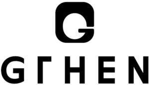

Trade Mark Journal No.2026/009 27 February 2026
WO0000001902074 (14,18,25)
Office of origin: Republic of Korea
Date of International Registration:21 November 2025
Date of designation in the UK:
21 November 2025

- Class 14
- Key rings of leather; imitation leather key chains; metal key rings; key rings of precious metals; key chains as jewellery [trinkets or fobs]; plastic key chains; key chains [split rings with trinket or decorative fob]; retractable key chains; charms for key rings; retractable key rings; rings [jewelry]; earrings; necklaces; jewellery made of precious metals; watches; jewelry chains; ornamental pins; jewelry charms; women's jewelry; jewellery plated with precious metals.
- Class 18
- Handbags; handbags for ladies; leather handbags; small handbags; bags; shoulder bags; leather bags and wallets; bags for sports; purses; trunks and traveling bags; travelling bags of nylon; briefcases; straps for purses [handbags]; packaging containers of leather; labels of leather; luggage tags of leather; straps for bags; luggage tags.
- Class 25
- Clothing; footwear; ready-made clothing; shirts; pants; dresses; one-piece suits; skirts; children's clothing; under garments; socks; leggings [trousers]; neckties; gloves including those made of skin, hide or fur; sports wear; shoes; training shoes; headwear; belts [clothing]; overcoats [excluding sports wear and Korean traditional dress].
MIJU CO., LTD.
Representative: HAEAN PATENT & LAW FIRM, 5F, 23-6, Eonju-ro 85-gil, Gangnam-gu, Seoul 06222, REPUBLIC OF KOREA